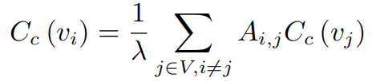
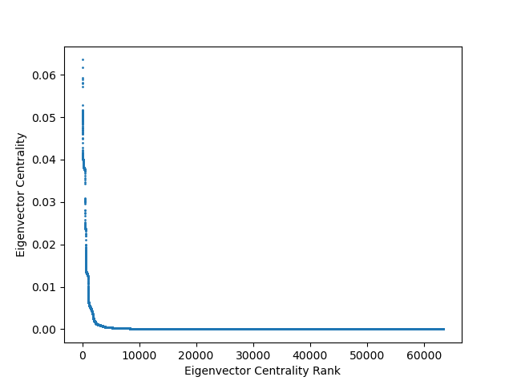
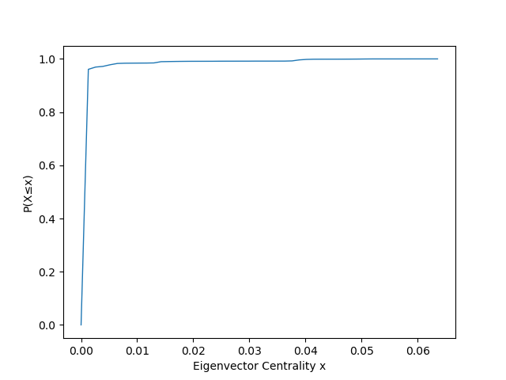
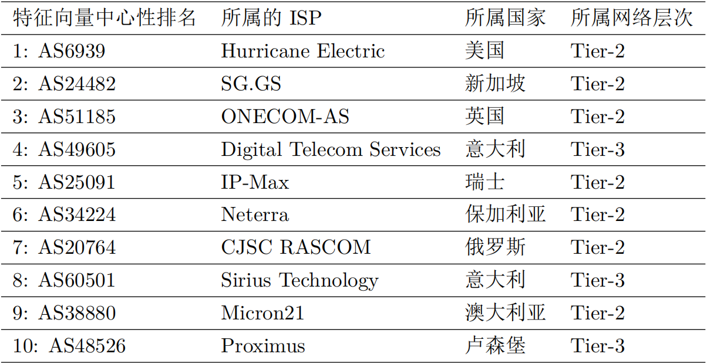

AS节点特征向量中心性
特征向量中心性对一个节点的关键程度的刻画不仅取决于这个节点，还取决于这个节点的邻接节点的关键程度。与重要的节点连接的节点比较重要，与少量有影响的邻居相连的节点其中心性可能超过拥有大量平庸的邻居的节点。特征向量中心性等于其邻居节点的特征向量中心性之和。一个节点的所有邻接节点的中心性越大，那么这个节点的特征向量中心性就越大。每个节点`v_(i)`的特征向量中心性`C_(e)(v_(i))`可以通过以下的公式得到：

其中`\lambda`代表节点是一个常数；`A_(i,j)`代表节点`v_(i)`与节点`v_(j)`之间是否存在链路，如果存在为1，不存在为0；`C_(e)(v_(j))`代表节点`v_(j)`的特征向量中心性，特征向量中心性的计算需要经过多次迭代，直到达到稳态。


上图展示2019年1月AS拓扑各节点的特征向量中心性及其CDF分布，绝大多数的AS具有很小的特征向量中心性，极少的AS具有很大的特征向量中心性，仅有4.3%的节点的特征向量中心性超过了0.0013。

上表展示了特征向量中心性的AS排名中前十的AS，在特征向量中心性最高的前100个AS中不包含Tier-1的AS。在特征向量中心性最高的前100个AS中，19个属于美国、10个属于俄罗斯、9个属于英国、5个属于法国、4个属于意大利、2个属于德国、2个属于澳大利亚。